This article was written with AI (Chat GPT 4o) and partially edited by me 😁
Okinawa soba tour 🚶♂️ I ate here in July 2024 😁 This time I visited “Mendokoro Tiandā” in Ameku, Naha City ✨.
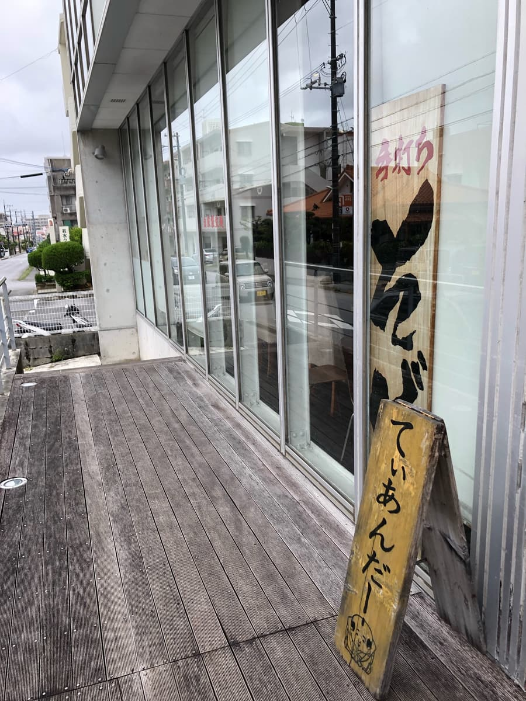
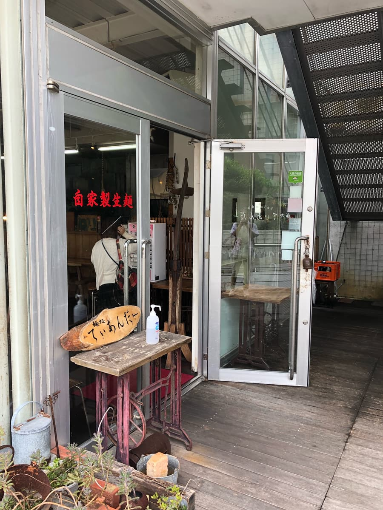
When you enter the shop, wood-grain interior and a homey atmosphere spread out before you; it's a shop that somehow makes you feel nostalgic. Autograph boards displayed on the walls caught my eye, and I really felt that this is a shop loved by locals.
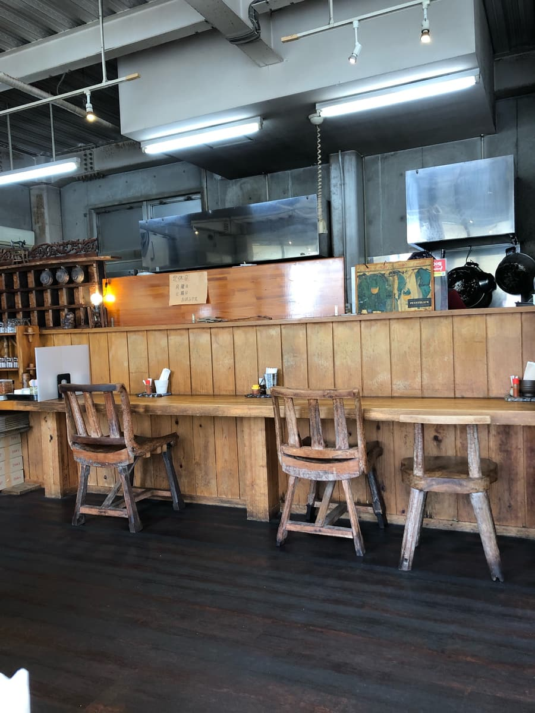
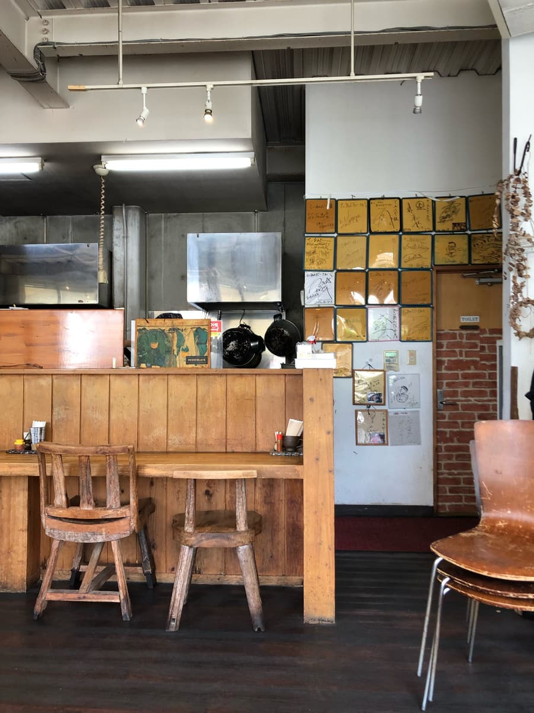
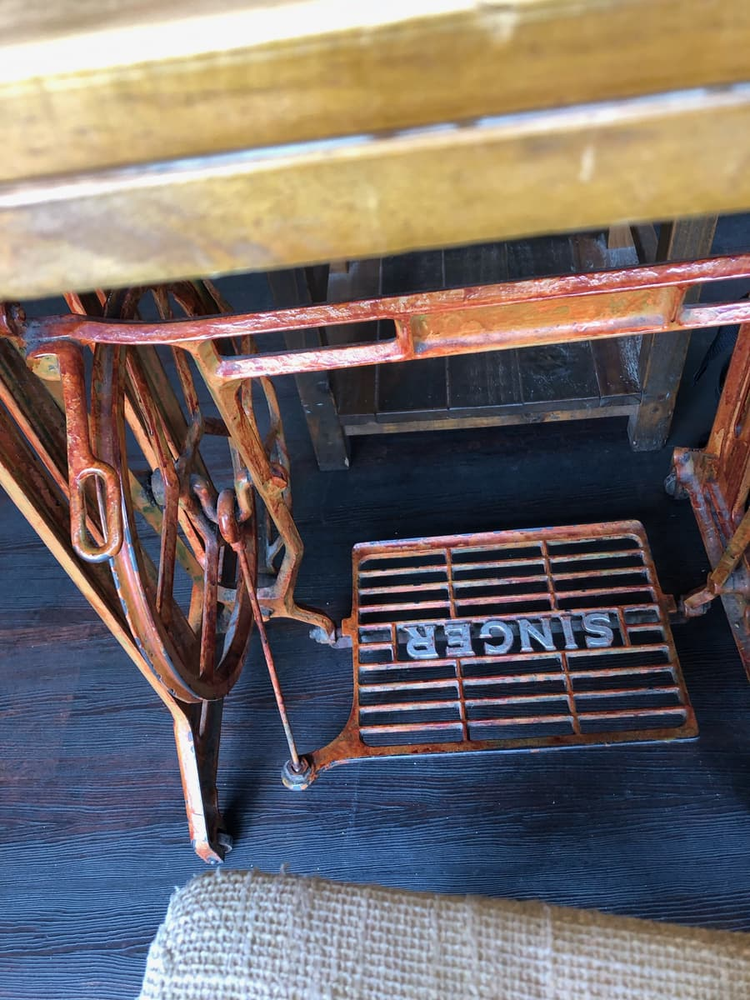
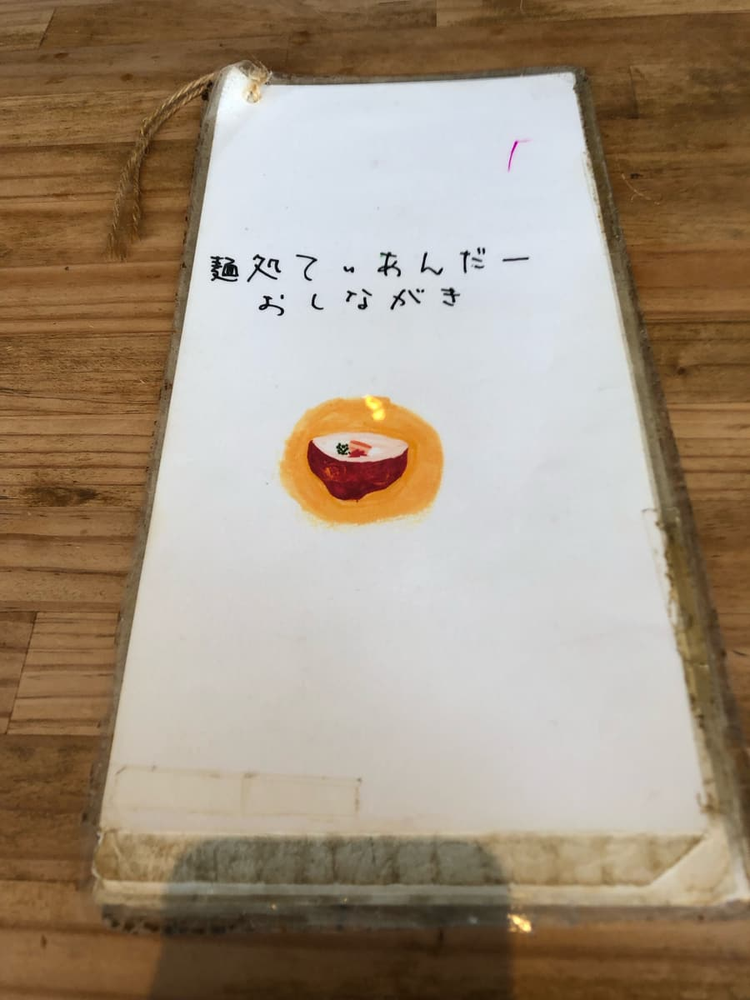
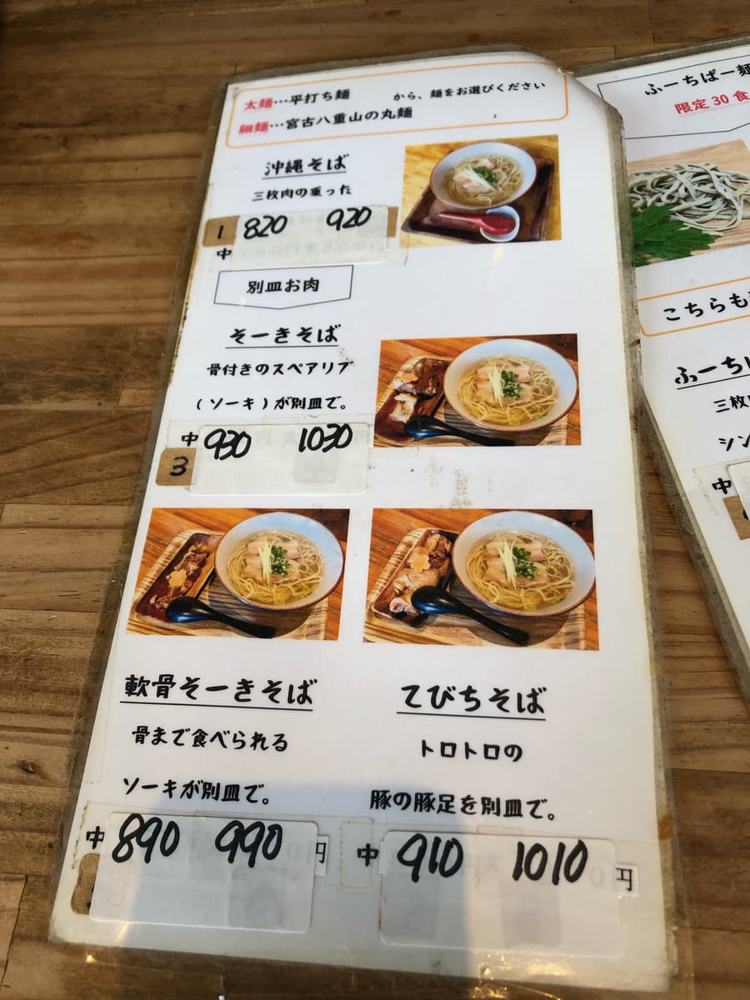
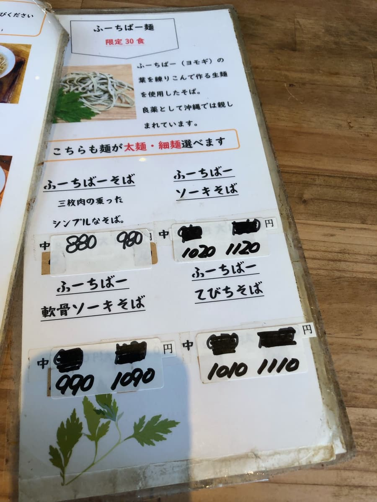
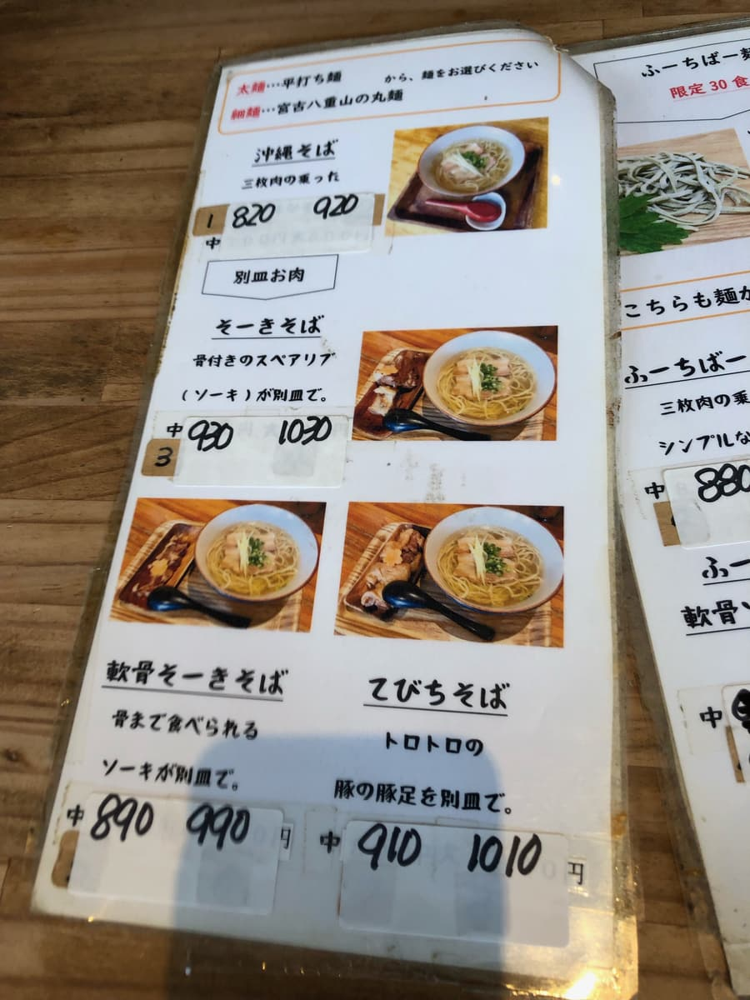
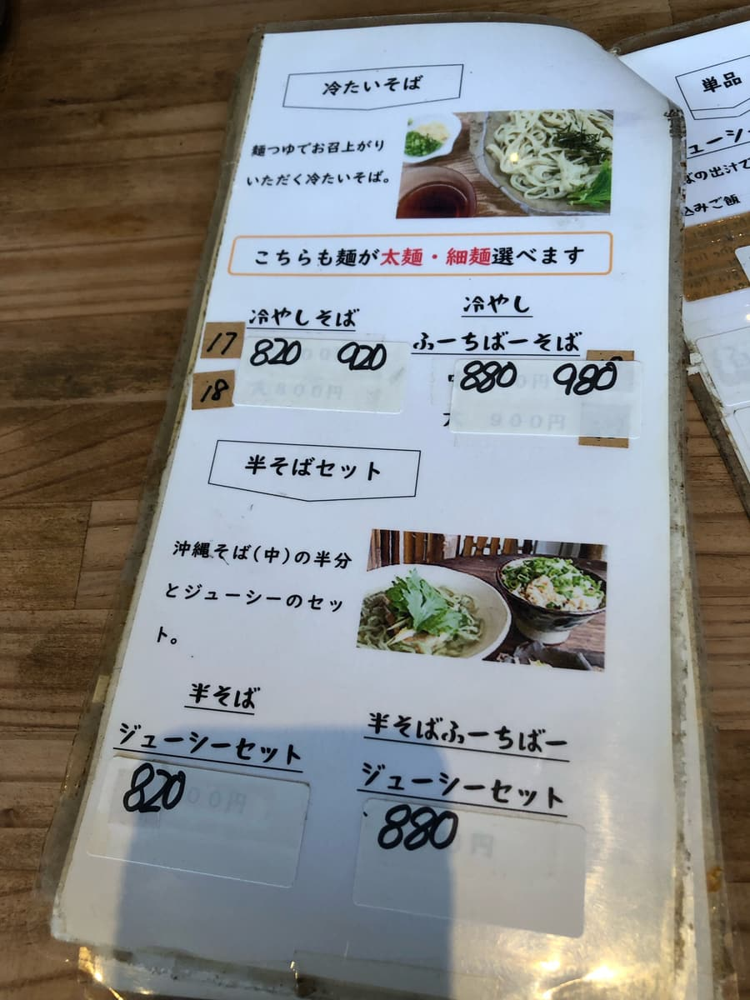
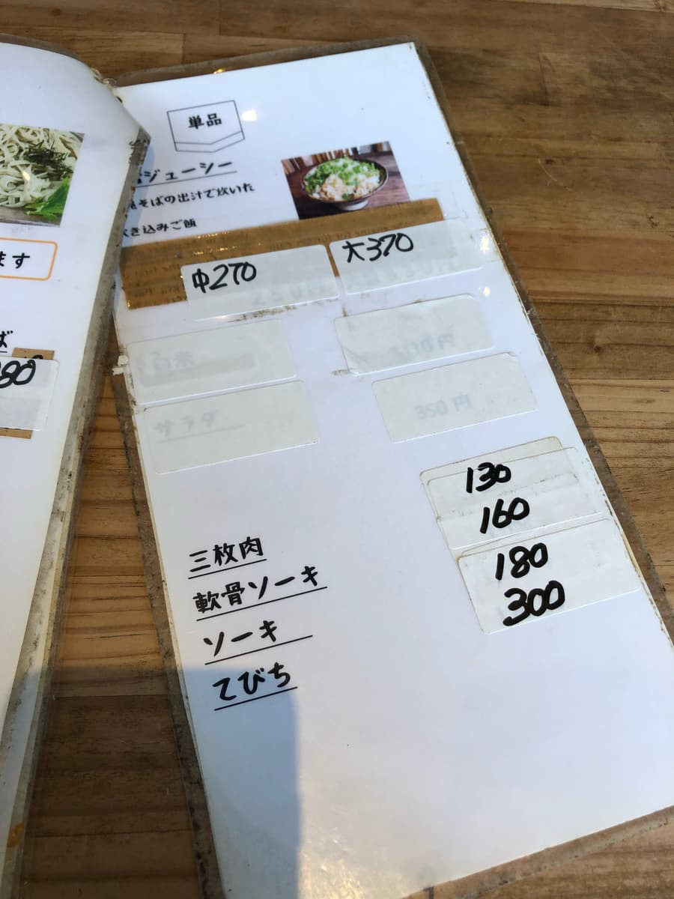
From the menu, I ordered the “soft-bone pork rib (nankotsu soki) soba with fuchiba noodles” 😋. The words “house-made fresh noodles” on the entrance door caught my eye, raising my expectations. I waited excitedly, wondering what the combination of noodles kneaded with fuchiba (mugwort) and the uniquely Okinawan soft-bone pork ribs (nankotsu soki) would taste like.
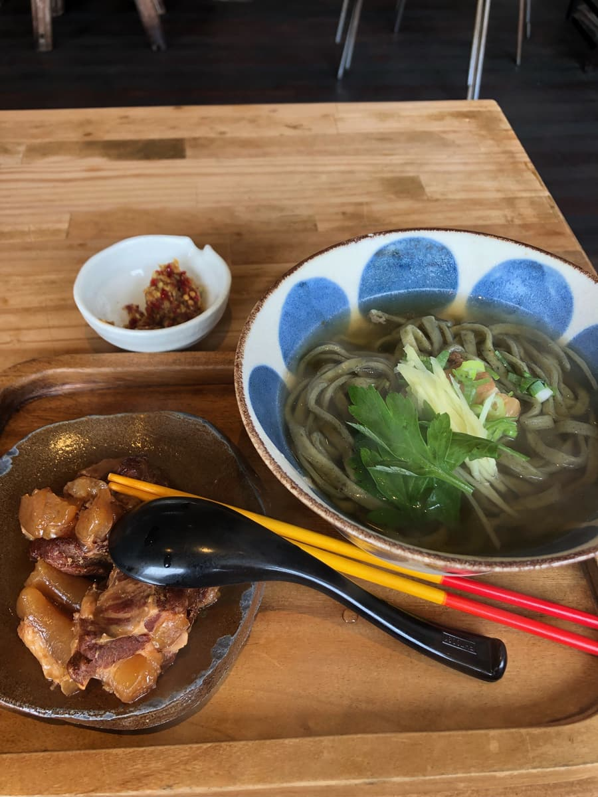
The soba that came out was beautiful from the look of it to begin with ✨. The greenish flat (thick?) fuchiba noodles float in a clear, light bonito broth soup, and ginger and mitsuba are gently placed on top. The soft-bone pork ribs (nankotsu soki), simmered until melt-in-your-mouth tender and served on a separate plate, really whet the appetite too 🍖.
First, a sip of the soup… Ooh! The bonito broth spreads slowly, a gentle taste that isn't heavy 😌. It's light, yet you can properly feel the umami, so it's a taste that makes you feel more relieved with every sip.
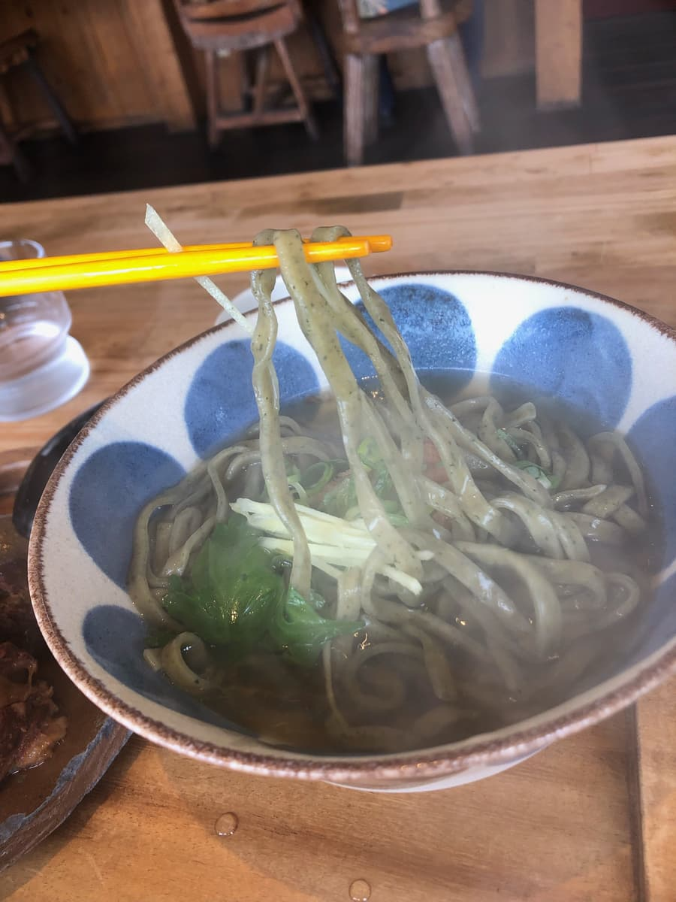
And the flat (thick?) noodles! These are firm and really satisfying to eat 💪. The springiness you feel the moment you put them in your mouth is irresistible. It's a texture that reminds me a bit of the noodles at “Ishigufu,” and personally I like it a lot 😊.
The noodles kneaded with fuchiba (mugwort) have a faint grassy aroma too, and you can feel the Okinawan character. They're full of flavor, and I felt they add an accent to the taste of Okinawa soba, which can tend to be monotonous 🌿.
Next, the soft-bone pork ribs (nankotsu soki). They're served on a separate plate, a trick to keep their flavor from transferring to the soup. The soki itself is tender enough to fall apart in your mouth ✨ However, a little sinew remains, giving a balance with some chewiness / bite. You can eat them down to the bone, so it's a dish where you can fully enjoy traditional Okinawan cuisine 😋.
And this time the “kōrēgūsu (chili-infused awamori)” was a bit unique. Generally the liquid type is common, but here a granular solid type is provided 🧂. Both the look and the taste are a little different, and this was a little surprise. The heat isn't that strong, so I enjoyed changing up the flavor while dissolving it bit by bit into the soup 👍.
Rating (9/15): It was a reassuring Okinawa soba that tasted just plain delicious. The firmness of the flat noodles and the flavor of the fuchiba were especially memorable, but some people might feel the noodles are on the hard side. The soup and the soft-bone pork ribs (nankotsu soki) also came together in an ordinary, well-balanced way 😌.
Noodles: ★★★☆☆（3）
Soup: ★★★☆☆（3）
Toppings: ★★★☆☆（3）